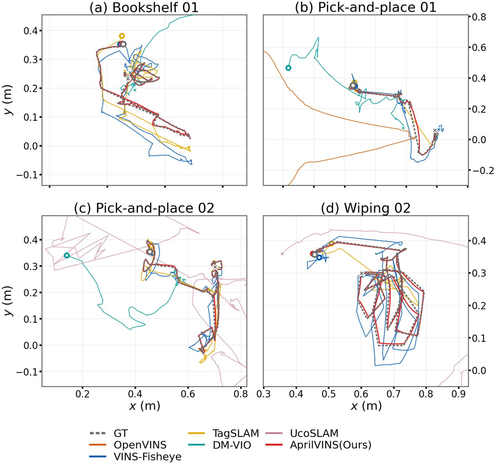
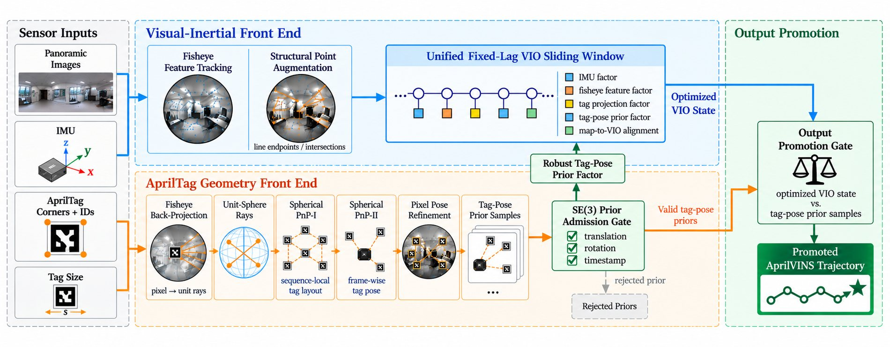

Dataset videos
Task clips across scenes and sensors
Each card shows an approximately 10 s segment cropped from the rosbag-synchronized preview video. X5 clips are front/back fisheye pairs; Insight9 clips are left/right grayscale pairs.
Loading video clips…
Paper figures
Benchmark and method snapshots
The manuscript also includes trajectory-level comparisons, task difficulty analysis, the AprilVINS data flow, and the real-world collection pipeline.




Release
Anonymous review page
This is an anonymous project-page draft for review. Dataset, paper, and code links will be activated when the release package is finalized.